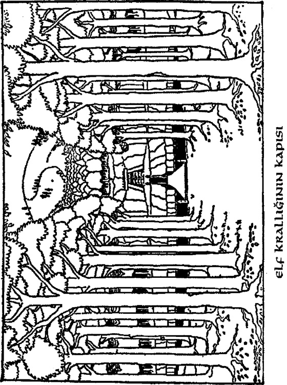

BÖLÜGO 9
P İ Ç İ L A R L A k ^ ç ı ş
Örümceklerle yapılan çarpışmadan
sonraki gün Bilbo ve cüceler açlık ve
susuzluktan ölmeden Önce çıkış yolunu
bulmak için son bir umutsuz deneme
daha yaptılar.
Kalktılar ve onüçünden sekizinin
patikanın uzandığını tahmin ettiği yönde
sendeleye sendeleye ilerlediler, ama
haklı olup olmadıklarını hiç
anlayamadılar. Böylesi bir gün
ormandaki her gün gibi bir kez daha
gecenin karanlığına karışıyorken birden
etraflarında yüzlerce kırmızı yıldız gibi
bir sürü meşalenin ışığı belirdi, Orman-
elfleri yayları ve mızraklanyla ortaya
çıktılar ve cüceleri durmaya çağırdılar.
Kavga etmek akıllarının ucundan
geçmedi. Cüceler yakalanmalarına
gerçekten sevinecek durumda
olmasalardı bile, sahip oldukları tek
silah olan o küçük bıçaklar, elflerin
karanlıkta bir kuşu gözünden vurabilen
oklarına karşı pek fayda etmezdi. Bunun
üzerine yalnızca zınk diye durdular ve
oturup beklediler - yüzüğünü parmağına
geçiren ve çabucak bir kenara kayan
Bilbo dışında tabii. İşte bu nedenle
elfier cüceleri birbirleri ardına dizip
uzun bir sıra halinde bağladıklarında ve
saydıklarında hobbiti hiç bulamadılar ve
saymadılar.
Ayrıca tutsaklarını ormana götürürlerken
meşale ışığının hemen ardında hızla
ilerleyişini de ne duydular ne de
hissettiler. Her cücenin gözleri
bağlanmıştı, ama bu pek de fark
etmiyordu. Çünkü Bilbo bile gözleri
açık olduğu halde 187

nereye gittiklerini göremiyordu, üstelik
ne o ne de diğerleri yola nereden
başladıklarını bile bilmiyorlardı.
Bilbo meşalelere ayak uydurmak için
elinden geleni yapıyordu, çünkü elfler
hasta ve yorgun hallerine bakmadan
cüceleri gidebilecekleri kadar hızlı
götürüyorlardı. Kral onlara acele
etmelerini buyurmuştu.
Birden meşaleler durdu ve hobbit onları
köprüyü geçmeden ancak yakalayabildi.
Bu, nehrin üzerinden kralın kapılarına
giden köprüydü. Su, altta, karanlık ve
hızlı ve güçlü akıyordu; ve diğer uçta,
ağaçlarla kaplı dik bir yamacın içine
uzanan bir mağara azmanının ağzında,
kapılar vardı. Ve orada kocaman
kayınlar kökleri akıntıya kapılana dek
kıyıya sokulmuşlardı.
Elfler tutsaklarını köprünün öbür
tarafına itelediler, ama Bilbo arkada
duraksadı. Bu büyük mağaranın ağzının
görünüşünü sevmedi ve kralın koca
kapıları artlarında bir çınlamayla
kapanmadan önce tam zamanında,
arkadaşlarını terk etmemeye karar verdi
ve son elflerin topuklarının hemen
arkasından hızla koştu.
Geçitlerin içi kırmızı meşale ışıklarıyla
aydınlatılmıştı ve onlar kıvrılan,
birbirleriyle çakışan ve yankı yapan
yollarda ilerlerken elf-muhafızlar
şarkılar söylüyorlardı. Bunlar goblin-
şehirlerine benzemiyorlardi; daha küçük,
daha az yerin altında" ve daha temiz bir havayla doluydular. Elflerin kralı canlı
taşlardan yontulmuş sütunları olan.büyük
bir salonda ağaç oyma bir koltukta
oturuyordu. Güz yine geldiğinden
başında böğürtlen ve kırmızı
yapraklardan yapılmış bir taç vardı.
İlkyazda, orman ülkesi çiçekleriyle
yapılmış bir taç giyerdi. Elinde oyma
meşe bir asa tutuyordu.
Tutsaklar huzuruna getirildiler; ve kral
onlara sert sert bakmasına rağmen zayıf
ve yorgun oldukları için adamkmna
onları çözmelerini söyledi. 'Hem burada
herhangi bir bağa ihtiyaçları yok,' dedi,
'Bir kez içeri 189
getirilenler için artık sihirli
kapılarımdan kaçış yoktur/
Kral cüceleri uzun bir süre ve çok
ayrıntılı olarak yaptıkları şeyler, nereye
gittikleri ve nereden geldikleri
konusunda sorguladı; ama cücelerden
Thorin1 den elde edebildiğinin ancak
biraz fazlasını elde edebildi. Hırçın ve
öfkeliydiler ve nazik olmaya
çalışmadılar bile.
'Biz ne yaptık ki, ey kral?' dedi içlerinde
artık yaşı en büyük olan Balin. 'Ormanda
kaybolmak, aç ve susuz kalmak
örümcekler tarafından kapana
kıstırılmak suç mu?
Öldürmemiz sizi öfkelendirdiğine göre
bu örümcekler sizin uysal hayvanlarınız
mı yoksa evde beslediğiniz gözdeleriniz
mi?
Böyle bir soru tabii kralı daha da
öfkelendirdi ve şöyle yanıtladı: 'Benim
ülkemde izinsiz dolaşmak suçtur. Benim
krallığımda olduğunuzu ve halkımın
yaptığı yolu kullandığınızı unutuyor
musunoz? Ormanda halkımı tam üç kez
izleyip rahatsız etmediniz mi ve gürültü
patırtı ve yaygarayla örümcekleri siz
ayaklandırmadınız mı?
Verdiğiniz tüm rahatsızlığın üzerine sizi
buralara neyin getirdiğini bilme hakkım
var ve eğer bunu şu an anlatmazsanız
aklı başında ve terbiyeli davranmayı
öğrenene dek sizi hapiste tutarım!'
Sonra cücelerin her birisinin ayrı bir
hücreye konulmasını ve yiyecek ve
içecek verilmesini, ama içlerinden en az
biri öğrenmek istediklerini anlatana dek
de küçük hapishanelerinin kapılarından
geçmelerine izin verilmemesini emretti.
Ama Thorin'in de yanında tutsak
olduğunu söylemedi. Bunu bulup ortaya
çıkartan Bilbo oldu.
Zavallı Bay Baggins - yorucu derecede
uzunca bir süre, o yerde tümüyle tek
başına ve hep saklanarak, yüzüğünü
çıkartmaya hiç cesaret edemeyerek ve
bulabildiği en uzak ve karanlık
köşelerde bile uyumaya zorlukla cesaret
ederek 190
yaşadı. Yapacak bir şeyler olsun diye de
Elfkrahnın sarayını dolaşmaya girişti.
Kapılan sihirler kapatıyordu ve bazen çabuk olabildiği zamanlarda dışarı
çıkabiliyordu. Orman-elfleri, bazen
kralları da başta olmak üzere, ata
binmek, avlanmak ya da ormanda ya da
I>oğuya düşen topraklarda başka bir iş
için gruplar halinde dışarı çıkıyorlardı.
O aralar eğer Bilbo yeterince çevik
olabilirse çok tehlikeli olmasına rağmen
hemen arkalarından kayıveriyordu.
Birden fazla kez, 'son elf kapıdan
geçerken çarpıştıkları için az daha
yakalanıyordu; yine de (meşale ışığında
zayıf ve titrek olsa da) gölgesi yüzünden
ve birinin çarpıp orada olduğunu
anlamasından korktuğundan onlarla
birlikte yürümeye cesaret edemiyordu.
Çok nadir de olsa dışan çıkabildiğinde
bu hiçbir işe yaramıyordu. Cüceleri
bırakıp gitmeyi istemiyordu ve zaten
onlarsız dünyanın neresine
gidebileceğini de bilmiyordu.
Dışardalarken avlanan elflere hiçbir
zaman yetişemiyordu, bu yüzden de
ormandan çıkış
yollarını hiç öğrenemiyor ve bir dönüş
fırsatı ele geçirene
- dek de kaybolmaktan dehşete düşerek,
çaresiz ve başıboş
ormanda dolanıp ' duruyordu.
Dışardayken avcılıktan anlamadığı için
aç da kalıyordu, ama mağaralann içinde
ya depodan da ortalıkta kimse yokken
masadan yiyecek çalarak yaşamını
sürdürüyordu.
'Çekip gidemeyen, ama çaresizce her
gün aynı evi soymaya devam etmek
zorunda kalan bir hırsız gibiyim,'
diye düşündü. lBu berbat, yorucu ve
tatsız maceranın en can sıkıcı ve kasvetli
yanı bu! Keşke yeniden hobbit-
kovuğumda, parlayan lambam ve sıcak
ateşimin yanı başında olabilseydim!'
Ayrıca sık sık, yardım için büyücüye bir
nrıesaj gönderebilmeyi de diliyordu,
ama tabii bu tamamen olanaksızdı; ve
çok geçmeden eğer bir şey yapılması
gerekiyorsa bunun Bay Baggıns
tarafından yapılması gerektiğinin farkına
vardı; tek başına ve yardımsız.